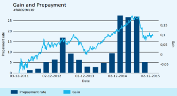
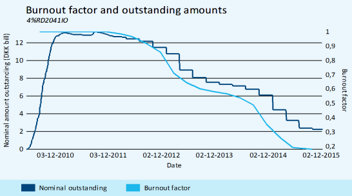

Modellering af konverteringsadfærd
Gevinstkrav, miksturmodel og prisning af konverterbare realkreditobligationer
Modellering af Konverteringsadfærd
Introduktion
- Vi ønsker at forstå prisfastsættelsen og risikonøgletal på en konverterbar realkreditobligation
- Prisfastsættelsen er kompleks:
- Rentestrukturmodel → fremtidige renter og konverteringer
- Prepayment-model → låntagernes konverteringsadfærd
- Numeriske metoder (MLE, PDE-gitter, Monte Carlo)
- Rentestrukturmodel → fremtidige renter og konverteringer
- I dette kursus holder vi os til overfladen, men kompleksiteten er stadig stor
- Praktikere handler ofte på resultaterne – uden selv at beregne modellerne
Konverteringsadfærd
Optionselementet
- Låntager kan altid indfri sit fastforrentede realkreditlån til pari (kurs 100)
- Det svarer til, at låntager har en call-option på egen gæld
- For investoren betyder det:
- Betalingsrækken er usikker
- Konverteringsadfærd har stor indflydelse på obligationens værdi
- Betalingsrækken er usikker
Ordinær ydelsesrække (uden konvertering)
- Eksempel: 5% NYK 2053
- Ingen konvertering → deterministisk cashflow
- Figuren viser rente + afdrag som annuitet
- Investoren ville foretrække denne stabile betalingsstrøm
Ydelsesrække med konvertering
- Virkeligheden: Mange låntagere konverterer
- Resultat: kortere betalingsstrøm, usikker profil
- Konverteringsraten (CPR) afgør, hvor hurtigt obligationen afvikles
Hvad driver konverteringer?
- Strukturelle ændringer (flytning, skilsmisse, jobskifte)
- Alternativ finansiering (skifte til fleks/variabelt lån)
- Økonomisk gevinst (rentefald → gevinst ved omlægning)
- Sidste punkt er det vigtigste og kan modelleres
Konverteringsraten (CPR)
Definition
- CPR = andel af udestående restgæld, som indfries til pari i en periode
- På dansk: konverteringsraten
- Sammen med ordinære udtræk giver det den samlede udtræksprocent
\[ UDT = 100 \cdot CPR + ORD \cdot (1 - CPR) \]
Eksempel: CK95-data
| NYK 5% 2053 | NYK 4% 2053 | |
|---|---|---|
| Cirk. nom. (mio) | 62.096 | 43.833 |
| Udtræk i % | 3,47% | 0,34% |
| Ekstraord. i % | 3,06% | 0,01% |
| Faktisk CPR | 3,07% | 0,01% |
| Modelestimat CPR | 10,92% | 2,77% |
- 5%-serien havde klart større konvertering pga. gevinstmuligheder
- Modeller skal fange forskelle og give estimater før tallene offentliggøres
Konverteringsdata
Debitorfordelinger (CK92)
- Serier består af tusindvis af lån
- Kun restgældsfordelinger offentliggøres (ikke adresser)
- Lån opdeles i private og erhverv
Fordeling af obligationsrestgæld pr. 23/09/2024
- Nedenstående er rå debitorfordelingsdata for en 5% NYK 2053 ::: {.smaller style=“font-size: 0.6em”} | Interval | Privat (mio. kr.) | Privat % | Erhverv (mio. kr.) | Erhverv % | Total (mio. kr.) | |———-|——————:|———:|——————-:|———-:|—————–:| | 1 | 11,2 | 0,0 % | 0,2 | 0,0 % | 11,4 | | 2 | 723,7 | 1,2 % | 4,0 | 0,0 % | 727,7 | | 3 | 8.921,3 | 14,9 % | 32,9 | 0,1 % | 8.954,2 | | 4 | 41.113,6 | 68,8 % | 304,1 | 0,5 % | 41.417,6 | | 5 | 7.338,2 | 12,3 % | 429,4 | 0,7 % | 7.767,6 | | 6 | 44,7 | 0,1 % | 506,2 | 0,8 % | 550,9 | | 7 | – | 0,0 % | 331,3 | 0,6 % | 331,3 | | Total| 58.152,6 | 97,3 % | 1.608,1 | 2,7 % | 59.760,7 | :::
Homogen gruppering af debitordata 23/09/2024
- Vi kan gruppere det smartere! Nemmere at modellere
- Findes flere forskellige metoder og måder at gruppere på.

Gruppering
- Forenkling: lån opdeles i Small, Medium, Large
- Store lån konverterer hurtigere end små (større økonomisk gevinst, bedre rådgivning)
| Gruppe | Beskrivelse | Vægt |
|---|---|---|
| 1 | Small Loans | 16,2 % |
| 2 | Medium Loans | 81,6 % |
| 3 | Large Loans | 2,2 % |
Konverteringsmodellen
Hvorfor have en konverteringsmodel?
- Konverteringsadfærd er svær at forudsige, fordi beslutningen afhænger af mange faktorer:
- Kreditværdighed
- Forventninger til fremtiden
- Jobsituation, skilsmisser osv.
- Kreditværdighed
- Det er derfor umuligt at modellere alle detaljer → vi har brug for en praktisk og intuitiv model
- Formålet er ikke at lave en perfekt model, men en model der kan bruges til:
- Prisfastsættelse af konverterbare obligationer
- Beregning af risikonøgletal
- Prisfastsættelse af konverterbare obligationer
Jakobsen-modellen (1992)
- Udviklet af Svend Jakobsen (medstifter af Scanrate)
- Bygger på to hovedelementer:
- Gevinstkravsmodellen → estimerer sandsynligheden for konvertering baseret på økonomisk gevinst
- Miksturmodellen → opdeler låntagere i grupper med forskellig konverteringsadfærd
- Gevinstkravsmodellen → estimerer sandsynligheden for konvertering baseret på økonomisk gevinst
- Kombinationen giver en mere realistisk beskrivelse af, hvordan hele obligationsserien konverterer
Den centrale drivfaktor
- Den eneste stokastiske variabel i gevinstkravsmodellen:
- Gevinsten ved at refinansiere
- Gevinsten ved at refinansiere
- Intuition: Jo større gevinst en låntager kan opnå, desto større er sandsynligheden for konvertering
- Denne variabel undersøges i næste afsnit: Gevinstkravsmodellen
Gevinstkravsmodellen
- Låntagere konverterer, når gevinsten overstiger deres personlige krav
- Gevinsten beregnes som:
\[
Gain = \frac{PV_{continue} - 100 \cdot (1+c)}{PV_{continue}}
\] - \(c\) = omkostning ved konvertering (fx 2%)
- Hver låntager har forskelligt gevinstkrav → spredning
Gevinstkravsmodellen
Miksturmodellen
- Gevinstkravsmodellen udvides med flere variable
- CPR for en serie er vægtet sum af gruppernes CPR
\[ \text{CPR} = \sum_j w_j \cdot \text{CPR}_j \]
- Faktorer:
- Gevinst (+)
- Burnout (+)
- Restløbetid (–)
- Gevinst (+)
Burnout-effekten
- Aggressive låntagere konverterer først → serien bliver “udbrændt”
- Få tilbageværende låntagere konverterer langsommere
- Effekt: fremtidig CPR falder, hvis meget er indfriet
\[ \begin{cases} \begin{aligned} I_{ss,t}(1 - \text{CPR}_t) \;+\;& (1 - I_{ss,t}) \,\text{Burnout}_{t-1} \\ &\times (1 - \text{CPR}_t) \end{aligned}, & \text{if } I_{ss,t} > 0 \\[6pt] \text{Burnout}_{t-1}(1 - \text{CPR}_t), & \text{if } I_{ss,t} \leq 0 \end{cases} \]
Burnout-effekten
Tid til udløb-effekten
- Kortere lån → konverteres typisk ved lavere gevinstniveau
- Længere lån → låntager kan vente længere (optionen kan blive mere værd)
- Argument fra optionsteorien: Jo længere tid til udløb, desto større sandsynlighed for at call-optionen går dybere i pengene
\[ \text{Restløbetid} = \frac{\text{Udløbsdato – Terminsdato}}{365} \]
Tid til udløb-effekten
| Nyk 5 2046 | Nyk 5 2053 | |
|---|---|---|
| Termin | 01-10-2024 | 01-10-2024 |
| Udløb | 01-10-2046 | 01-10-2053 |
| Restløbetid | 22,01 år | 29,02 år |
- Eksempel:
– Nyk 5 2046 kræver lavere gevinst for at konvertere
– Nyk 5 2053 har længere horisont → større sandsynlighed for fremtidig gevinst
Konverteringsfunktioner
Tre grupper
- Hver låntagergruppe har egen CPR-funktion
- Store lån → hurtigere konvertering ved samme gevinst
- Samlet CPR = vægtet gennemsnit
Modelopdatering
- Nye data ændrer estimerede funktioner
- Opdatering sker typisk kvartalsvist
Usikkerhed
- Jo længere tidshorisont → større usikkerhed
- Både renter og låntageradfærd kan ændre sig
Opsummering
Takeaways
- Konverteringsoptionen = call-option for låntager, risiko for investor
- CPR (konverteringsrate) afgør cashflow og risiko
- To modelkomponenter:
- Gevinstkravsmodel (gevinstdrevet konvertering)
- Miksturmodel (forskelle på låntagergrupper)
- Gevinstkravsmodel (gevinstdrevet konvertering)
- Faktorer: gevinst, burnout, restløbetid
- Modeller giver bud – men usikkerhed vokser med horisonten
Øvelser
Udtræk på serieniveau (CK95)
Du har følgende CK95-data på to forskellige realkreditobligationer:
| 1.5 RD S MTG 2043 | 5 NYK E MTG 2053 | |
|---|---|---|
| Payment Date | 2024-07-01 | 2024-07-01 |
| Cirk. nom. mio. kr. | 21,371,745 | 63,871,157,094 |
| Udtrukket beløb | 263,450 | 1,751,177 |
| Ekstraordinær i % | 0 % | 2.34 % |
| Udtræk i % | 1.23 % | 2.74 % |
- Udregn det ordinære udtræk for begge obligationer.
- Udregn CPR for begge obligationer.
- Du får nu at vide, at 1.5 RD handler til kurs 85 og 5.0 NYK handler til kurs 102. Hvorfor har det en betydning for det observerede ekstraordinære afdrag?
- Hvorfor tror du, at der er så stor forskel i prisen mellem de to obligationer? (Hint: argumenter ud fra kuponrenten)
Debitorfordelinger (CK92)
Du får følgende debitorfordelinger for de samme obligationer:
ISIN DK0004622172
| Interval | Privat | Virksomhed |
|---|---|---|
| 1 | 102,691 | – |
| 2 | 938,558 | – |
| 3 | 3,937,398 | 1,960,933 |
| 4 | 7,667,202 | – |
| 5 | – | 6,421,709 |
| 6 | – | – |
| 7 | – | – |
ISIN DK0009539116
| Interval | Privat | Virksomhed |
|---|---|---|
| 1 | 11,375,699 | 196,996 |
| 2 | 734,885,349 | 3,989,296 |
| 3 | 9,070,398,958 | 32,911,710 |
| 4 | 42,193,012,670 | 302,408,835 |
| 5 | 7,577,403,715 | 433,009,565 |
| 6 | 58,189,089 | 506,186,999 |
| 7 | – | 331,326,781 |
- Placer hver af de 7+7 (private + virksomheder) i de tre grupperinger jævnfør figuren af mappingsreglerne. Gør dette for hver af de to obligationer.
- Udregn nu vægtene for hver gruppe i hver obligation.
- Argumenter for hvilke mulige årsager der står bag, hvorfor medium-group er så stor for DK0009539116?
Gain-beregning
- Du får at vide at nutidsværdien ved at fortsætte dit lån er \(PV = 110.28\) samt der er en procentvis omkostning ved at konvertere dit lån på 5 %. Beregn gevinst-variablen ved at konvertere dit lån. Burde man konvertere?
- Du får at vide at nutidsværdien for at fortsætte sit lån på en anden obligation er på 101. Burde man konvertere?
- Hvad nu, hvis omkostningsprocenten falder til 2 % i ovenstående obligation. Burde man konvertere?
Miksturmodellen
Du får oplyst følgende estimerede gruppe-CPR:
\[ \begin{aligned} CPR_{1} &= 1.43\% \\ CPR_{2} &= 3.27\% \\ CPR_{3} &= 7.64\% \end{aligned} \]
Samt følgende grupperede nominelle værdier:
\[ \begin{aligned} SamletNominel_{1} &= 6{,}939{,}580 \ \text{DKK} \\ SamletNominel_{2} &= 7{,}667{,}202 \ \text{DKK} \\ SamletNominel_{3} &= 6{,}421{,}709 \ \text{DKK} \end{aligned} \]
- Beregn det vægtede serie-CPR ud fra ovenstående information.
- Antag at det generelle renteniveau falder. Hvad sker der med det vægtede CPR? Hvorfor?
- Du får at vide, at burnout er på 0.92 i nuværende kvartal, samt at serien er lukket. Hvad var burnout i forrige kvartal givet dit udregnede serie-CPR? Hvilken betydning har det på burnout, hvis vi antager serien er lukket?
- Hvis det generelle renteniveau som sagt falder, hvordan kommer det til at påvirke burnout i nuværende og fremtidige perioder?
- Antag nu at serien er åben for nyudstedelser og at andelen af nyudstedelser \(I_{ss,t} = 0.15\). Udregn nu burnout for den nuværende periode og sammenlign_
Finansiering — Konvertering & modellering